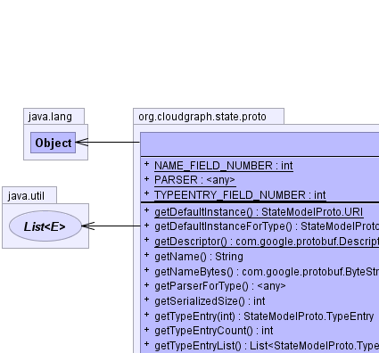
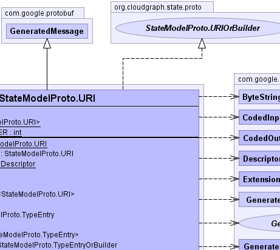
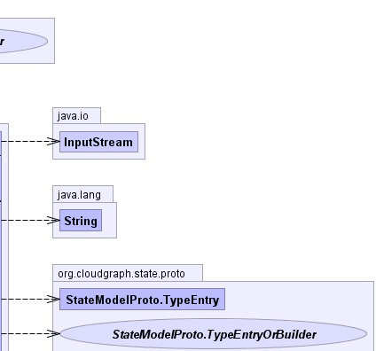
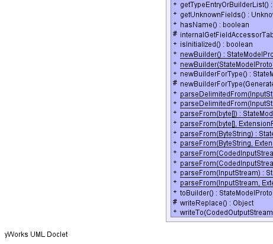
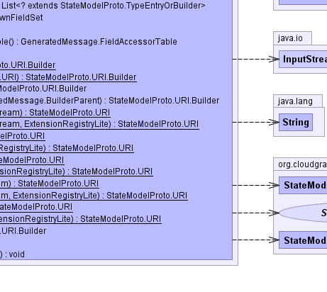
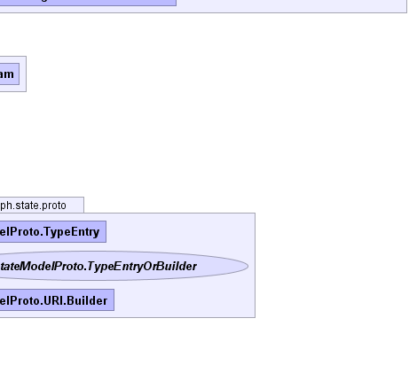

public static final class StateModelProto.URI extends com.google.protobuf.GeneratedMessage implements StateModelProto.URIOrBuilder
org.cloudgraph.state.proto.URI|  |  |  |
|  |  |  |
| Modifier and Type | Class and Description |
|---|---|
static class |
StateModelProto.URI.Builder
Protobuf type
org.cloudgraph.state.proto.URI |
com.google.protobuf.GeneratedMessage.BuilderParent, com.google.protobuf.GeneratedMessage.ExtendableBuilder<MessageType extends com.google.protobuf.GeneratedMessage.ExtendableMessage,BuilderType extends com.google.protobuf.GeneratedMessage.ExtendableBuilder>, com.google.protobuf.GeneratedMessage.ExtendableMessage<MessageType extends com.google.protobuf.GeneratedMessage.ExtendableMessage>, com.google.protobuf.GeneratedMessage.ExtendableMessageOrBuilder<MessageType extends com.google.protobuf.GeneratedMessage.ExtendableMessage>, com.google.protobuf.GeneratedMessage.FieldAccessorTable, com.google.protobuf.GeneratedMessage.GeneratedExtension<ContainingType extends com.google.protobuf.Message,Type>| Modifier and Type | Field and Description |
|---|---|
static int |
NAME_FIELD_NUMBER |
static com.google.protobuf.Parser<StateModelProto.URI> |
PARSER |
static int |
TYPEENTRY_FIELD_NUMBER |
| Modifier and Type | Method and Description |
|---|---|
static StateModelProto.URI |
getDefaultInstance() |
StateModelProto.URI |
getDefaultInstanceForType() |
static com.google.protobuf.Descriptors.Descriptor |
getDescriptor() |
java.lang.String |
getName()
required string name = 1; |
com.google.protobuf.ByteString |
getNameBytes()
required string name = 1; |
com.google.protobuf.Parser<StateModelProto.URI> |
getParserForType() |
int |
getSerializedSize() |
StateModelProto.TypeEntry |
getTypeEntry(int index)
repeated .org.cloudgraph.state.proto.TypeEntry typeEntry = 2; |
int |
getTypeEntryCount()
repeated .org.cloudgraph.state.proto.TypeEntry typeEntry = 2; |
java.util.List<StateModelProto.TypeEntry> |
getTypeEntryList()
repeated .org.cloudgraph.state.proto.TypeEntry typeEntry = 2; |
StateModelProto.TypeEntryOrBuilder |
getTypeEntryOrBuilder(int index)
repeated .org.cloudgraph.state.proto.TypeEntry typeEntry = 2; |
java.util.List<? extends StateModelProto.TypeEntryOrBuilder> |
getTypeEntryOrBuilderList()
repeated .org.cloudgraph.state.proto.TypeEntry typeEntry = 2; |
com.google.protobuf.UnknownFieldSet |
getUnknownFields() |
boolean |
hasName()
required string name = 1; |
protected com.google.protobuf.GeneratedMessage.FieldAccessorTable |
internalGetFieldAccessorTable() |
boolean |
isInitialized() |
static StateModelProto.URI.Builder |
newBuilder() |
static StateModelProto.URI.Builder |
newBuilder(StateModelProto.URI prototype) |
StateModelProto.URI.Builder |
newBuilderForType() |
protected StateModelProto.URI.Builder |
newBuilderForType(com.google.protobuf.GeneratedMessage.BuilderParent parent) |
static StateModelProto.URI |
parseDelimitedFrom(java.io.InputStream input) |
static StateModelProto.URI |
parseDelimitedFrom(java.io.InputStream input,
com.google.protobuf.ExtensionRegistryLite extensionRegistry) |
static StateModelProto.URI |
parseFrom(byte[] data) |
static StateModelProto.URI |
parseFrom(byte[] data,
com.google.protobuf.ExtensionRegistryLite extensionRegistry) |
static StateModelProto.URI |
parseFrom(com.google.protobuf.ByteString data) |
static StateModelProto.URI |
parseFrom(com.google.protobuf.ByteString data,
com.google.protobuf.ExtensionRegistryLite extensionRegistry) |
static StateModelProto.URI |
parseFrom(com.google.protobuf.CodedInputStream input) |
static StateModelProto.URI |
parseFrom(com.google.protobuf.CodedInputStream input,
com.google.protobuf.ExtensionRegistryLite extensionRegistry) |
static StateModelProto.URI |
parseFrom(java.io.InputStream input) |
static StateModelProto.URI |
parseFrom(java.io.InputStream input,
com.google.protobuf.ExtensionRegistryLite extensionRegistry) |
StateModelProto.URI.Builder |
toBuilder() |
protected java.lang.Object |
writeReplace() |
void |
writeTo(com.google.protobuf.CodedOutputStream output) |
getAllFields, getDescriptorForType, getField, getRepeatedField, getRepeatedFieldCount, hasField, makeExtensionsImmutable, newFileScopedGeneratedExtension, newMessageScopedGeneratedExtension, parseUnknownFieldequals, findInitializationErrors, getInitializationErrorString, hashBoolean, hashCode, hashEnum, hashEnumList, hashFields, hashLong, toStringtoByteArray, toByteString, writeDelimitedTo, writeToclone, finalize, getClass, notify, notifyAll, wait, wait, waitpublic static com.google.protobuf.Parser<StateModelProto.URI> PARSER
public static final int NAME_FIELD_NUMBER
public static final int TYPEENTRY_FIELD_NUMBER
public static StateModelProto.URI getDefaultInstance()
public StateModelProto.URI getDefaultInstanceForType()
getDefaultInstanceForType in interface com.google.protobuf.MessageLiteOrBuildergetDefaultInstanceForType in interface com.google.protobuf.MessageOrBuilderpublic final com.google.protobuf.UnknownFieldSet getUnknownFields()
getUnknownFields in interface com.google.protobuf.MessageOrBuildergetUnknownFields in class com.google.protobuf.GeneratedMessagepublic static final com.google.protobuf.Descriptors.Descriptor getDescriptor()
protected com.google.protobuf.GeneratedMessage.FieldAccessorTable internalGetFieldAccessorTable()
internalGetFieldAccessorTable in class com.google.protobuf.GeneratedMessagepublic com.google.protobuf.Parser<StateModelProto.URI> getParserForType()
getParserForType in interface com.google.protobuf.MessagegetParserForType in interface com.google.protobuf.MessageLitegetParserForType in class com.google.protobuf.GeneratedMessagepublic boolean hasName()
required string name = 1;hasName in interface StateModelProto.URIOrBuilderpublic java.lang.String getName()
required string name = 1;getName in interface StateModelProto.URIOrBuilderpublic com.google.protobuf.ByteString getNameBytes()
required string name = 1;getNameBytes in interface StateModelProto.URIOrBuilderpublic java.util.List<StateModelProto.TypeEntry> getTypeEntryList()
repeated .org.cloudgraph.state.proto.TypeEntry typeEntry = 2;getTypeEntryList in interface StateModelProto.URIOrBuilderpublic java.util.List<? extends StateModelProto.TypeEntryOrBuilder> getTypeEntryOrBuilderList()
repeated .org.cloudgraph.state.proto.TypeEntry typeEntry = 2;getTypeEntryOrBuilderList in interface StateModelProto.URIOrBuilderpublic int getTypeEntryCount()
repeated .org.cloudgraph.state.proto.TypeEntry typeEntry = 2;getTypeEntryCount in interface StateModelProto.URIOrBuilderpublic StateModelProto.TypeEntry getTypeEntry(int index)
repeated .org.cloudgraph.state.proto.TypeEntry typeEntry = 2;getTypeEntry in interface StateModelProto.URIOrBuilderpublic StateModelProto.TypeEntryOrBuilder getTypeEntryOrBuilder(int index)
repeated .org.cloudgraph.state.proto.TypeEntry typeEntry = 2;getTypeEntryOrBuilder in interface StateModelProto.URIOrBuilderpublic final boolean isInitialized()
isInitialized in interface com.google.protobuf.MessageLiteOrBuilderisInitialized in class com.google.protobuf.GeneratedMessagepublic void writeTo(com.google.protobuf.CodedOutputStream output)
throws java.io.IOException
writeTo in interface com.google.protobuf.MessageLitewriteTo in class com.google.protobuf.AbstractMessagejava.io.IOExceptionpublic int getSerializedSize()
getSerializedSize in interface com.google.protobuf.MessageLitegetSerializedSize in class com.google.protobuf.AbstractMessageprotected java.lang.Object writeReplace()
throws java.io.ObjectStreamException
writeReplace in class com.google.protobuf.GeneratedMessagejava.io.ObjectStreamExceptionpublic static StateModelProto.URI parseFrom(com.google.protobuf.ByteString data) throws com.google.protobuf.InvalidProtocolBufferException
com.google.protobuf.InvalidProtocolBufferExceptionpublic static StateModelProto.URI parseFrom(com.google.protobuf.ByteString data, com.google.protobuf.ExtensionRegistryLite extensionRegistry) throws com.google.protobuf.InvalidProtocolBufferException
com.google.protobuf.InvalidProtocolBufferExceptionpublic static StateModelProto.URI parseFrom(byte[] data) throws com.google.protobuf.InvalidProtocolBufferException
com.google.protobuf.InvalidProtocolBufferExceptionpublic static StateModelProto.URI parseFrom(byte[] data, com.google.protobuf.ExtensionRegistryLite extensionRegistry) throws com.google.protobuf.InvalidProtocolBufferException
com.google.protobuf.InvalidProtocolBufferExceptionpublic static StateModelProto.URI parseFrom(java.io.InputStream input) throws java.io.IOException
java.io.IOExceptionpublic static StateModelProto.URI parseFrom(java.io.InputStream input, com.google.protobuf.ExtensionRegistryLite extensionRegistry) throws java.io.IOException
java.io.IOExceptionpublic static StateModelProto.URI parseDelimitedFrom(java.io.InputStream input) throws java.io.IOException
java.io.IOExceptionpublic static StateModelProto.URI parseDelimitedFrom(java.io.InputStream input, com.google.protobuf.ExtensionRegistryLite extensionRegistry) throws java.io.IOException
java.io.IOExceptionpublic static StateModelProto.URI parseFrom(com.google.protobuf.CodedInputStream input) throws java.io.IOException
java.io.IOExceptionpublic static StateModelProto.URI parseFrom(com.google.protobuf.CodedInputStream input, com.google.protobuf.ExtensionRegistryLite extensionRegistry) throws java.io.IOException
java.io.IOExceptionpublic static StateModelProto.URI.Builder newBuilder()
public StateModelProto.URI.Builder newBuilderForType()
newBuilderForType in interface com.google.protobuf.MessagenewBuilderForType in interface com.google.protobuf.MessageLitepublic static StateModelProto.URI.Builder newBuilder(StateModelProto.URI prototype)
public StateModelProto.URI.Builder toBuilder()
toBuilder in interface com.google.protobuf.MessagetoBuilder in interface com.google.protobuf.MessageLiteprotected StateModelProto.URI.Builder newBuilderForType(com.google.protobuf.GeneratedMessage.BuilderParent parent)
newBuilderForType in class com.google.protobuf.GeneratedMessageCloudGraph® is a registered trademark of TerraMeta Software, Inc. Copyright © 2014 - All Rights Reserved.